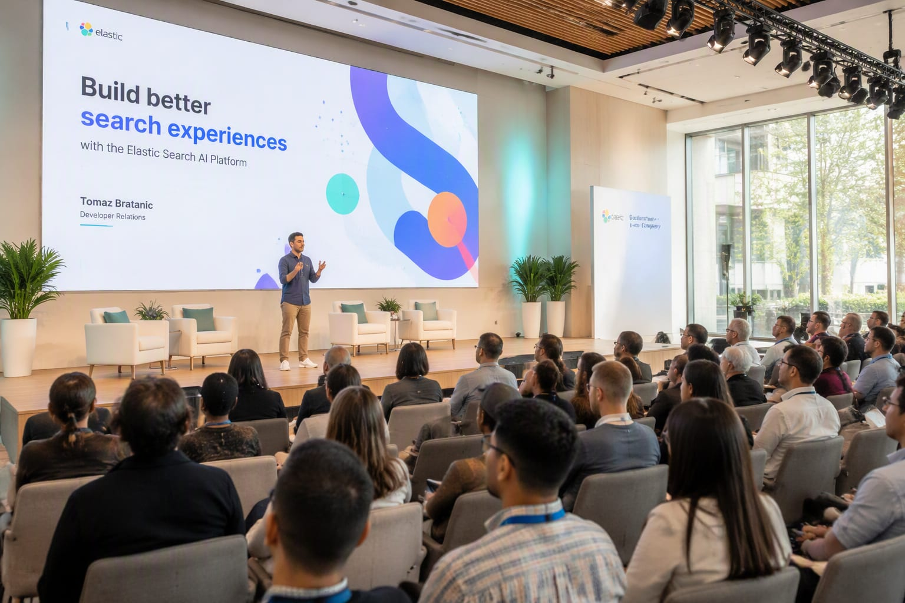

Related Review
 Gemini 2.0 Pro8.7
Gemini 2.0 Pro8.7Hands-on testing, score breakdown, pros & cons — everything you need to decide.
StackHKFull review
Three months after Sundar Pichai declared the agentic Gemini era at I/O, the demos have become defaults across Search, Workspace and Android.

When Sundar Pichai opened I/O 2026 with "Welcome to the agentic Gemini era," it read as branding. A summer of shipping later, it reads as a roadmap.
August’s Gemini updates push multi-step agent behavior deeper into Google’s product surfaces — tasks that run across Search, Workspace and Android without step-by-step babysitting.
The pitch is no longer a smarter chat box. It is an assistant that completes work and reports back.
The strategic subtext is a three-way race over where agents live: OpenAI converges on ChatGPT as the work canvas, Anthropic embeds through partners like Salesforce.
Google has the default distribution of Search, Android and Workspace.
Google is repositioning Gemini from assistant to agent: multi-step task execution across Gmail, Docs, Sheets and Calendar, with the model planning and executing workflows rather than answering questions. Early access shows trip-planning, inbox-triage and report-assembly flows that chain a dozen actions without per-step confirmation.
The agent advantage is权限: Google already holds authenticated access to the surfaces where knowledge work happens. An agent that must ask permission to read your email is a demo; one already trusted inside the mail client is a product. That structural head start is why the agent race may be decided by integration, not intelligence.
Delegating inbox and calendar actions to a model raises failure stakes — an agent that misfiles a client email is worse than one that misanswers a prompt. Google’s answer is scoped permissions and action logs, plus a confirmation gate for irreversible actions. Whether enterprises accept the trade is the adoption question of the quarter.
StackHK verified the details above against primary sources — official announcements, release notes and on-record statements — before publishing, and every figure carries its original attribution. Where coverage differed, we noted the discrepancy rather than picking a side. Quotes are attributed to their original context; paraphrases are marked as such. We exclude unverified rumors even when they circulate widely, and if a material claim changes, we update and date-stamp the correction.
The immediate checkpoint is the next vendor update cycle, where follow-through becomes measurable. Competitive responses typically land within a quarter, and pricing or packaging shifts are the usual first tell. StackHK tracks the follow-through as standing coverage — and where hands-on testing can verify or contradict specific claims, we publish that separately with methodology attached.
Strip away the launch-day noise and the durable signal here is about direction, not magnitude: the industry is consolidating around certain defaults — agent interfaces, efficiency-tier pricing, provenance requirements — while the differentiators move up the stack. Teams that position for the defaults early spend less time migrating later. We will revisit this story at the next milestone with fresh numbers rather than fresh adjectives.
Google intends to win on presence, not benchmarks.
“Welcome to the agentic Gemini era.”
“In August 2026 Google, OpenAI, DeepSeek and Anthropic all shipped new models or frameworks — the frontier cadence has become a monthly expectation.”